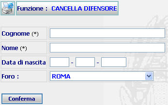

Posizionarsi sulla scheda di Ricerca;
Introdurre i dati obbligatori, contrassegnati con un asterisco (*) ed eventualmente i dati opzionali.
Agire sul pulsante
per effettuare la cancellazione dei dati di un difensore.
GENERALITA'
CANCELLA DIFENSORE (Da Menu): La funzione, consente di ricercare e cancellare dal sistema i dati di un difensore, introdotti precedentemente con la funzione inserimento difensore da un utente appartenente all'ufficio corrente.
LE MASCHERE VIDEO
La funzione in esame viene realizzata attraverso l'utilizzo della seguente maschera che riporta gli elementi descrittivi del difensore:

COME FARE PER ...
Per ricercare uno o più difensori da cancellare l'utente deve:
Posizionarsi sulla scheda di Ricerca;
Introdurre i dati obbligatori, contrassegnati con un asterisco (*) ed eventualmente i dati opzionali.
Agire sul pulsante
CAMPI
I dati che consentono di ricercare un utente sono i seguenti:
| NOME | DESCRIZIONE |
| Cognome * | Compilare il campo con testo libero |
| Nome * | Compilare il campo con testo libero |
| Foro | Selezionare tramite la tendina la voce desiderata. |
* Da notare che per i campi Cognome e Nome sono obbligatori.
PULSANTI
Oltre ai
pulsanti orizzontali dell'area
di navigazione, è presente
il pulsante
 di stampa del contesto (videata)
di stampa del contesto (videata)
BOTTONI
Oltre ai comandi funzionali relativi al menù verticale sono presenti i seguenti comandi:
|
COMANDI |
DESCRIZIONE |
|
|
A fronte di tale comando, il sistema dopo aver verificato la validità dei dati specificati, presenta la maschera contenente la cancellazione dei dati di un difensore che soddisfa la ricerca. |
CONTROLLI
A fronte
della pressione del bottone
 ,
il sistema verifica che:
,
il sistema verifica che:
tutti i campi siano stati compilati correttamente;
esista almeno un utente rispondente ai canali di ricerca selezionati; nel caso che il sistema non troverà alcun utente rispondente ai criteri di ricerca impostati verrà visualizzato il seguente messaggio:

non esista più di un utente rispondente ai canali di ricerca selezionati; nel caso che il troverà più di utente rispondente ai criteri di ricerca impostati verrà visualizzato il seguente messaggio:
In tal caso l'utente dovrà effettuare la cancellazione, come indicato dal messaggio, attraverso la funzione di ricerca difensore che permetterà all'utente di visualizzare l'elenco degli avvocati e quindi attraverso il pulsante
, presente nella lista, effettuare la relativa cancellazione attraverso la maschera di Cancella Difensore
N.B. l'operazione di cancellazione è possibile solo se l'avvocato è stato inserito da un utente dell'ufficio corrente.
Se il sistema non riscontrerà errori verrà visualizzata la maschera di cancellazione dei dati di un difensore che soddisfa la ricerca.